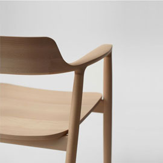

深泽直人 Naoto Fukasawa
日本著名产品设计师，家用电器和日用杂物设计品牌"±0"的创始人。他曾为多家知名公司诸如苹果、爱普生进行过品牌设计，其作品在欧洲和美国赢得过几十余设计大奖。 他的设计主张是:用最少的元素(上下公差为±0)来展示产品的全部功能。

日本著名产品设计师，家用电器和日用杂物设计品牌"±0"的创始人。他曾为多家知名公司诸如苹果、爱普生进行过品牌设计，其作品在欧洲和美国赢得过几十余设计大奖。 他的设计主张是:用最少的元素(上下公差为±0)来展示产品的全部功能。